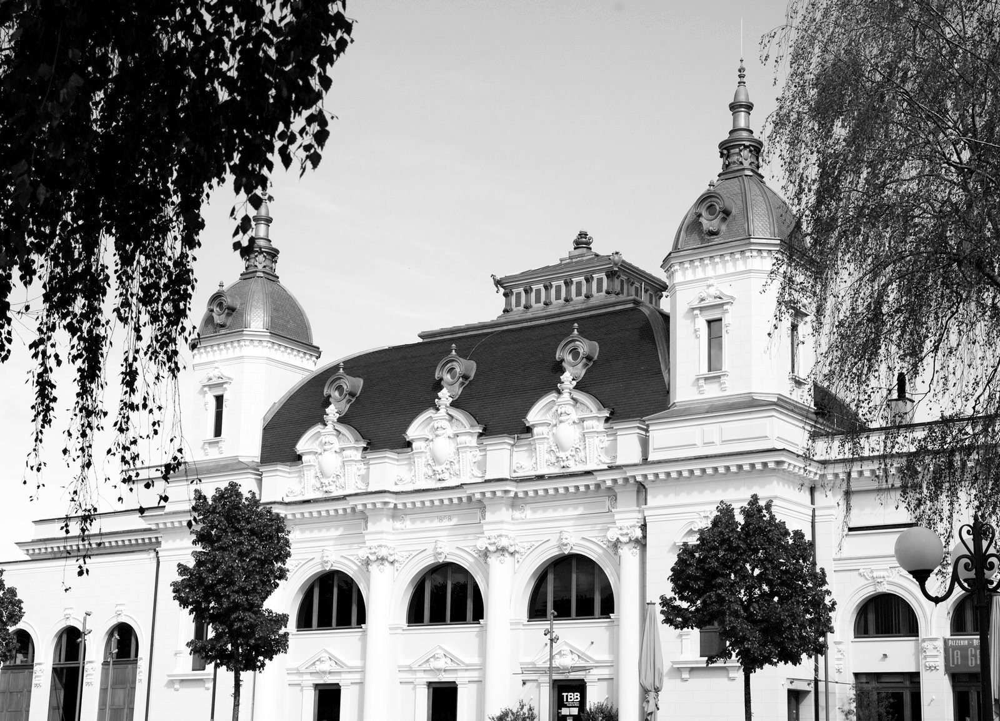
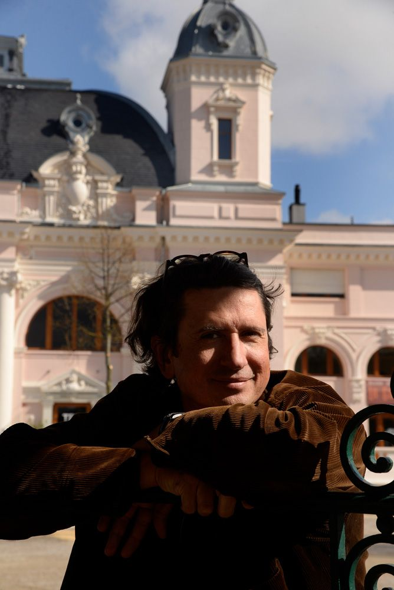
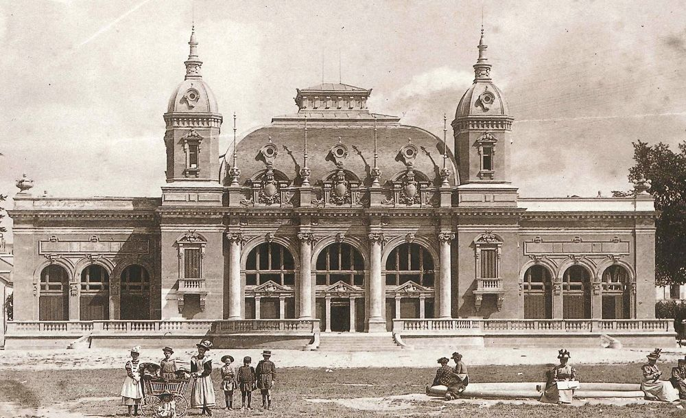
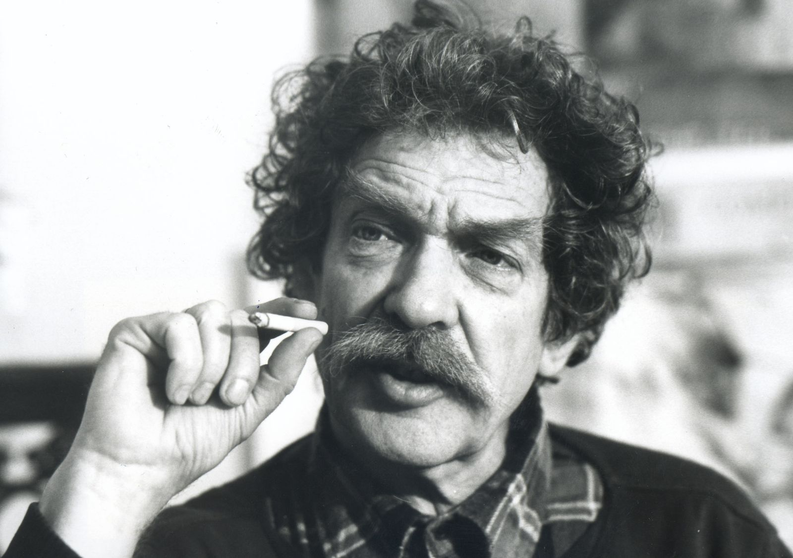
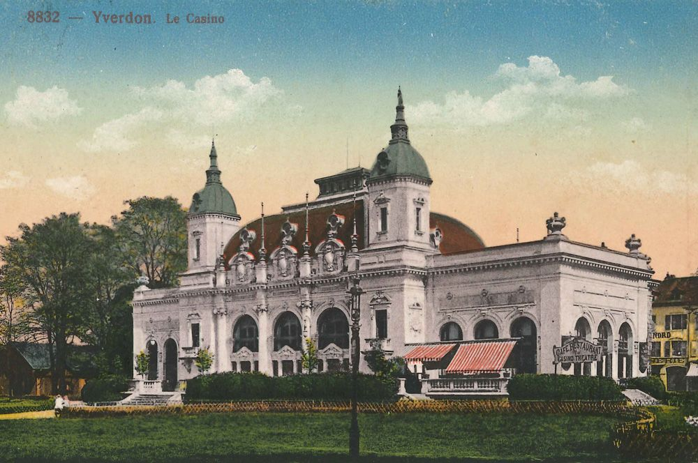
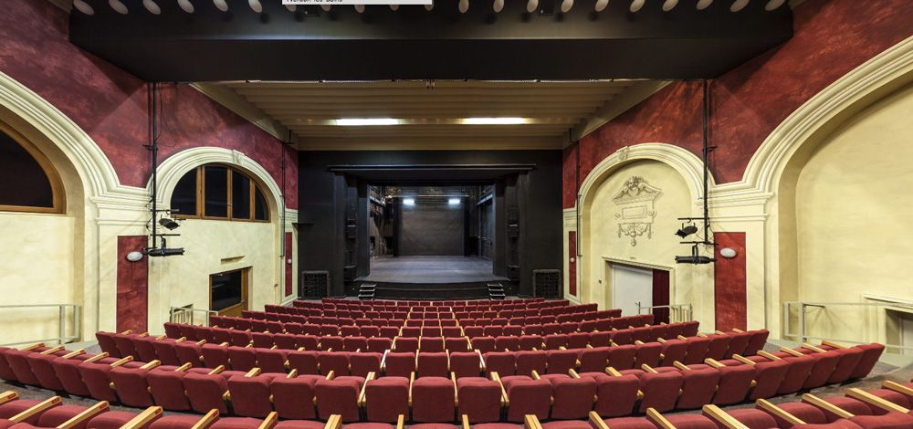
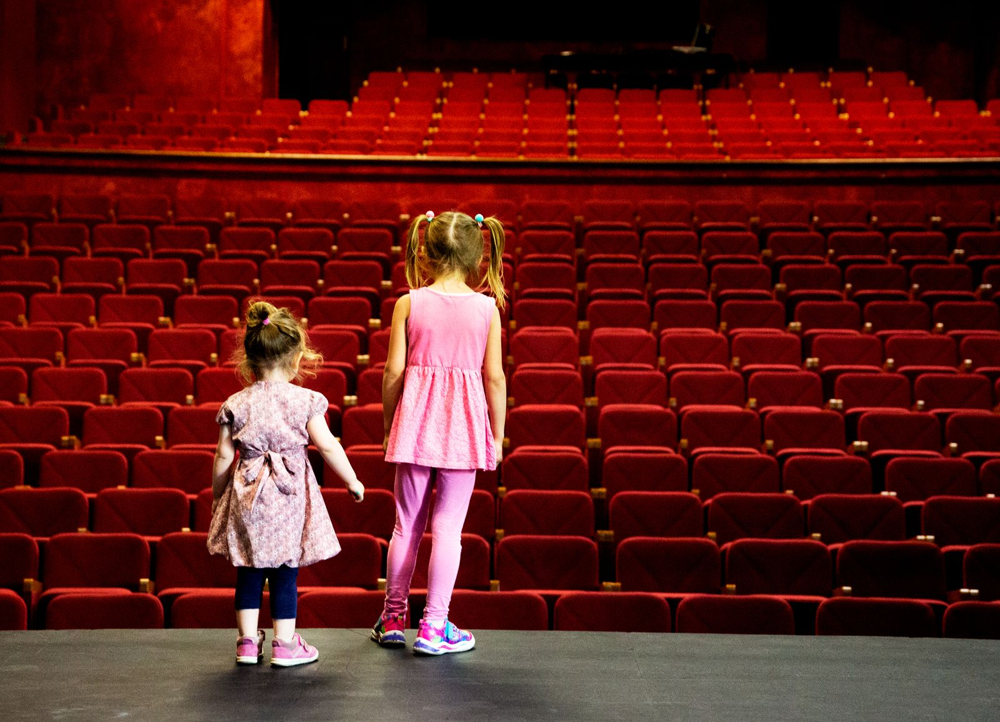
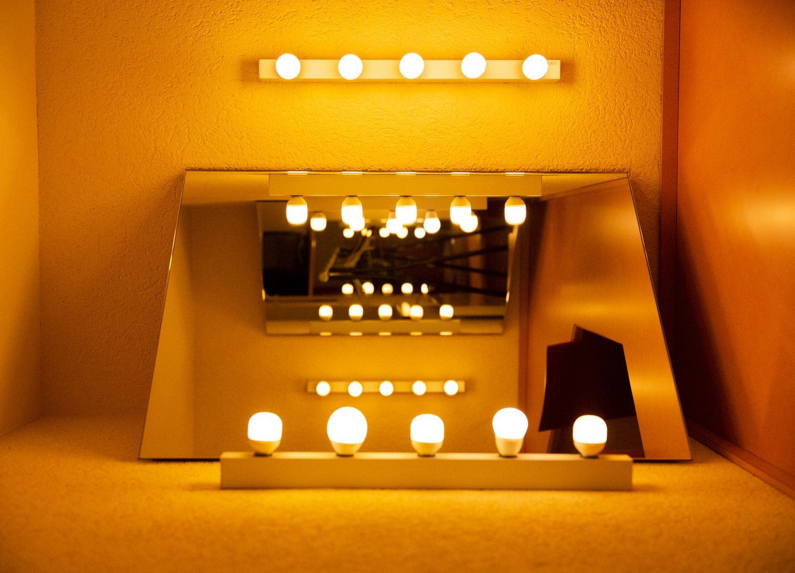
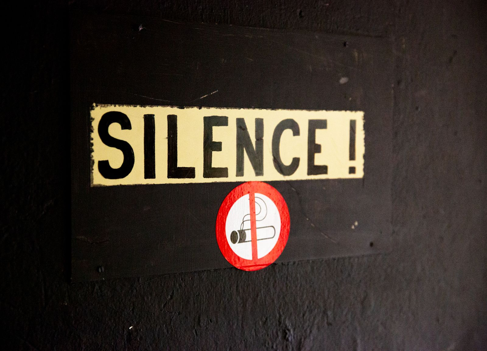
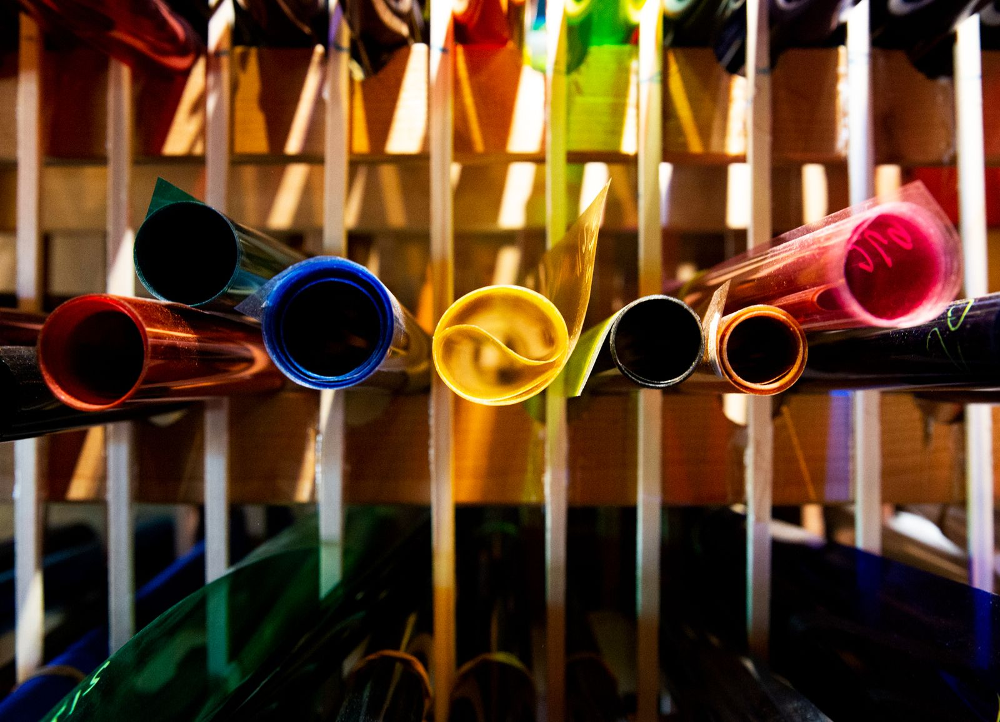

Accueil / Le théâtre
Le théâtre
Un casino de 1898, une salle à l’italienne, et le nom d’un enfant d’Yverdon devenu un maître du théâtre européen.

Une maison de quartier devenue théâtre de référence
Construit en 1898 sous le nom de Casino d’Yverdon-les-Bains, rebaptisé un siècle plus tard en hommage au grand homme de théâtre originaire du Nord vaudois, le TBB est un théâtre de référence dans le canton.
Après avoir abrité bals et soirées de sociétés locales, le théâtre municipal a structuré ses saisons sous les directions de Christiane Vincent (1981–1991), Pierre Bauer (1992–2012) et Thierry Luisier (2012–2017). Georges Grbic en assure la direction artistique depuis 2017.
Une cinquantaine de propositions par saison, du théâtre au cirque, de l’humour à la musique classique, avec une place forte pour le jeune public et la création romande : deux compagnies sont en résidence, la company Idem et la Cie Kokodyniack.

De 1898 à aujourd’hui
Histoire
-
1898
Le Casino
Yverdon inaugure son Casino néo-baroque, avec ses dômes d’ardoise et ses trois grandes baies. On y danse, on y donne des concerts et les soirées des sociétés locales.

-
1922
Naissance de Benno Besson
À 18 ans, il fonde à Yverdon une troupe de théâtre amateur. En 1942, il part étudier les lettres à l’Université de Zurich.
-
1947
Brecht, à Zurich
Au Schauspielhaus de Zurich, Besson assiste aux créations des pièces de Brecht et le rencontre. Deux ans plus tard, Brecht l’engage au Berliner Ensemble, comme comédien et assistant. « C’est du vivant de Brecht que je lui ai volé ce que je lui ai volé. »
-
1982
L’Oiseau vert
Après le Deutsches Theater de Berlin et trois spectacles au Festival d’Avignon, Besson prend la direction de la Comédie de Genève. Son Oiseau vert, d’après Gozzi, y rencontre un succès retentissant.

-
1998
Théâtre Benno Besson
Pour son centenaire, le Casino rénové devient une salle de 460 places et prend le nom de l’enfant du pays.

-
2020
La Salle 1
L’ancien foyer du premier étage devient une deuxième salle d’une soixantaine de places, pour les petites formes et le Midi théâtre.
« Le théâtre n’a pas de sens si ce n’est un plaisir, un plaisir à la vie. »
Benno Besson (1922–2006)
460 places à l’italienne, dernière rénovation en 2015
La salle





Les personnes qui font le TBB
Équipe
Administration 024 423 65 80. Technique 024 423 65 86, tbbtechnique@yverdon-les-bains.ch. Propositions de spectacles : programmation@yverdon-les-bains.ch.
- DirectionGeorges Grbic
- AdministrationFrance Jaton
- Communication et médiationAnicée Willemin
- Direction techniqueJulien Mayor
- Régie généraleVictor Hunziker, Samuel Taillet
- TechniqueAmir Jdahim
- Chargée de projetsLéa Thonney
- Médiation scolaireClaudia Saldivia Vega
- BilletterieEmmanuelle Macaluso-Pahud
- IntendanceFrancine Ray
- Placeuses et placeursLéa Macaluso
- Compagnies en résidencecompany Idem, Cie Kokodyniack
Association des Ami·es du TBB
Ami·es du TBB
Assister aux répétitions, visiter les coulisses avec le directeur, acheter son abonnement en priorité.
Bon copain·ine
50.–
par saison
Ami·e de longue date
150.–
par saison
Ami·e pour la vie
libre
le montant de votre choix